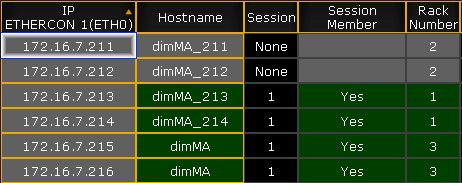

Important:
This topic deals with settings that can be made in the MA Network Configuration of MA NDPs. General settings are dealt with in Adding devices to your session. For information on the configuration of MA NDPs in the view MA Dimmer Network see Network dimmer and this topic´s corresponding subtopics.
Open the MA Network Configuration.
-Press Setup and tap MA Network Configuration.
The window MA Network Configuration opens.
-Tap NDP Dimmer.
Open NDP Dimmer in Network Configuration
Hint:
The columns displayed in green are editable.
To edit the hostname, tap and hold a cell in the column Hostname.
-The calculator opens.
-Enter the name.
To remove an MA NDP from the session, tap and hold a cell in the column Session Member. Yes disappears and the cell turns gray.

Remove MA NDP from session
Hint:
Remove MA NDPs from the session before deleting them. For more information see Delete the MA NDPs.
To edit the rack number, tap and hold a cell in the column Rack Number.
-The calculator opens.
-Enter the number of the rack.
Hint:
Changing the rack number proves handy if you have configured specific settings in the view MA Dimmer Network. For more information on the settings in MA Dimmer Network see Network dimmer and this topic´s corresponding topics.
The MA NDPs are configured and the settings are applied.